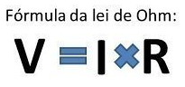

Arduino
Arduino transforma código em ação
Entrada e Saída Digital
- Binário: 0 - 1
- Físico ligado-desligado em volts: ~0 - 5
Entrada e Saída Analógica
- Binário: 0 - 1023
- Físico: 0 - 100%
- Volts: 0 - 5
O que é Arduino
É uma plataforma de hardware e software de código aberto, permitindo a criação de projetos interativos e protótipos. Alguns detalhes e informações de projetos (AQUI!)

O que é um microcontrolador
É um pequeno computador em um único chip que contém um processador, memória e periféricos de entrada/saída (E/S) para controlar tarefas específicas.
Microcontrolador do Arduino: modelo e fabricante
- Atmel
- ATmega328p UNO
Qual a linguagem de programação do Arduino
- C++
- Micropython
Onde o Arduino é programado (IDE)
Arduino IDE
Entrada analógica em Volts no Arduino e a resolução em Bits
- Volts: 0 - 5V
- Bits: 0 - 1023
Valor da entrada/saída digital em volts no Arduino
- 0 é 0V
- 1 é 5V
O que é um multímetro
É um instrumento de medição portátil usado para medir grandezas elétricas como tensão (voltagem), corrente (amperagem) e resistência (ohms)

O que é escala de medição
É um sistema de categorização e quantificação de dados que determina como as variáveis são avaliadas e analisadas, como V e Ω.
Qual a lei que o multímetro aplica para realizar as medidas
Lei de Ohms
O que é teste de continuidade e para que serve
Serve ára ver se o circuito elétrico está fechado e se a corrente pode correr entre dois pontos.
Como é a medição de uma resistência no resistor
Precisa-se usar um multímetro na escala de resistência (Ω), conectando as pontas nas extremidades.
Medição de uma tensão no circuito com resistor e led
Precisa-se usar um multímetro na função de voltímetro (VCC), pegar um fio negativo e um positivo do circuito e medir com o multímetro.
Como é a medição de uma corrente elétrica no circuito
Dependendo do circuito, usa-se um multímetro para medir a corrente elétrica, usando os pontos negativos e positivos.